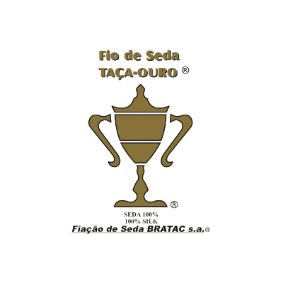
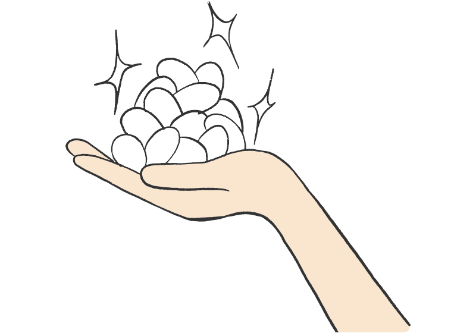

<%-- ▽編集可能領域：コンテンツ▽ --%>


20世紀前半、ブラジル日系開拓移民が日本養蚕業のDNAを引き継ぎ、
極めた世界最高峰シルクを算出するBRATAC社のシルクのこと。
欧州の著名コレクションブランドが採用する、世界最高峰の貴重なシルクです。
里帰りシルク
かつて、日本の養蚕業は質、取扱量ともに世界一を誇っていました。
そんな日系開拓民達がブラジルに渡って作ったのがブラジル拓殖組合、BRATAC社の前身です。
凡そ100年のながい時間を経て、日本で再び光り輝くBRATACのシルクを『里帰りシルク、Fiacao de Seda BRATAC s.a.』としてブランディング致します。
ずっと触っていたくなる、
しなやかな風合い
BRATAC 社のシルクは、シルクの等級で 6A という最もランクの高いシルクのみを使用。
繊維が均一なため本当に滑らかで、うっすらと光沢感が感じられます。
いつまでも触っていたくなる、そんな素材です。
